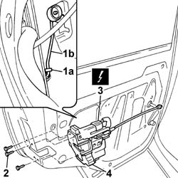
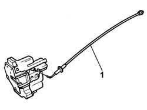

7010N20 rear side door lock motor/catch assembly - r r with door panel and support frame removed
- Path
- Procedures > 70 FITTINGS > 7010 PASSENGER COMPARTMENT REAR SIDE DOORS > 7010N rear side door central locking system > 7010N20 rear side door lock motor/catch assembly - r r with door panel and support frame removed
- Kind
- repair procedure (removal / refitting; the operation number is the code)
- Applies to
- all engines; all production periods
- Interactive page
- https://sloeber94.github.io/elrnDB-fPnd/en/#/2753114
Applies to: all engines; all production periods
 Removing
Removing
 Refitting
Refitting5570T93 REAR SIDE LOUDSPEAKER. (one), left or right - R.R. with rear door panel or wing. removed
7010A05 rear side door water guard protection-r r or arrange
7010E93 partition on rear door, lh or rh - r r with door panel removed
7010D23 rear side door descending window glass guide one-r r
1. Working from inside the door frame, release the fastening clip (1a) and disconnect the opening rod from the handle and lock (1b).
Release the rod for the interior handle from the fastening clip on the door frame.
2. Undo the retaining bolts.
Extract the motor/lock assembly complete with opening cable.
3. Disconnect the electrical connection.
 | Name | Connector |
|---|---|---|
3 | Left rear door lock geared motor | N55 |
| Name | Connector |
|---|---|---|
3 | Right rear door lock geared motor | N56 |
4. Remove the motor/lock assembly complete with opening cable.

Applies to: all engines; all production periods
1. Release the door opening rod from the fastening on the motor/lock and remove it.

Applies to: all engines; all production periods
Refitting
RemovingCheck the condition of the door opening rod and the motor/lock and, if necessary, replace them.
Secure the door opening rod to the fastening on the motor/lock.
Connect the electrical connection.
| Name | Connector |
|---|---|---|
- | Left rear door lock geared motor | N55 |
| Name | Connector |
|---|---|---|
- | Right rear door lock geared motor | N56 |
Position the motor/lock assembly complete with door opening rod in the housing in the door frame.
Tighten the bolts.
Secure the door opening rod to the special clip on the door frame.
Working from inside the door frame, connect the opening rod from the handle and lock and attach the fastening clip.
Check the operation of the motor/lock assembly and the door opening rod.
7010D23 rear side door descending window glass guide one-r r
7010E93 partition on rear door, lh or rh - r r with door panel removed
7010A05 rear side door water guard protection-r r or arrange
5570T93 REAR SIDE LOUDSPEAKER. (one), left or right - R.R. with rear door panel or wing. removed
Topics linked from this page (4)
- 5570T93 REAR SIDE LOUDSPEAKER. (one), left or right - R.R. with rear door panel or wing. removed
- 7010A05 rear side door water guard protection-r r or arrange
- 7010D23 rear side door descending window glass guide one-r r
- 7010E93 partition on rear door, lh or rh - r r with door panel removed